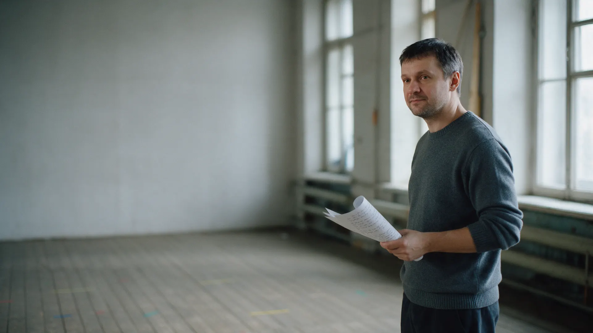
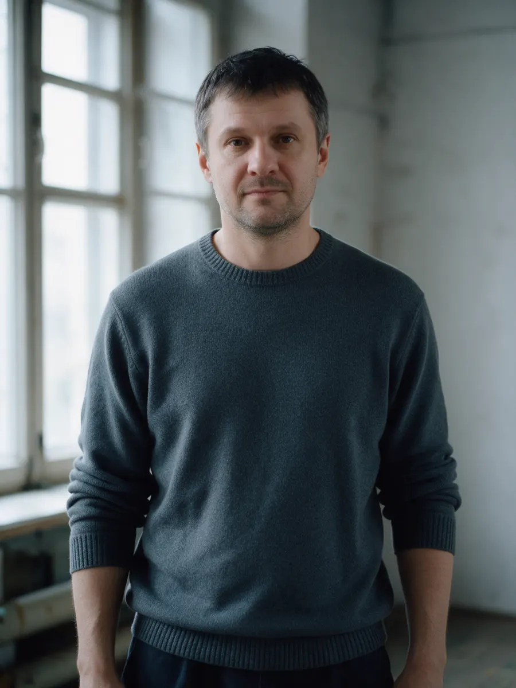
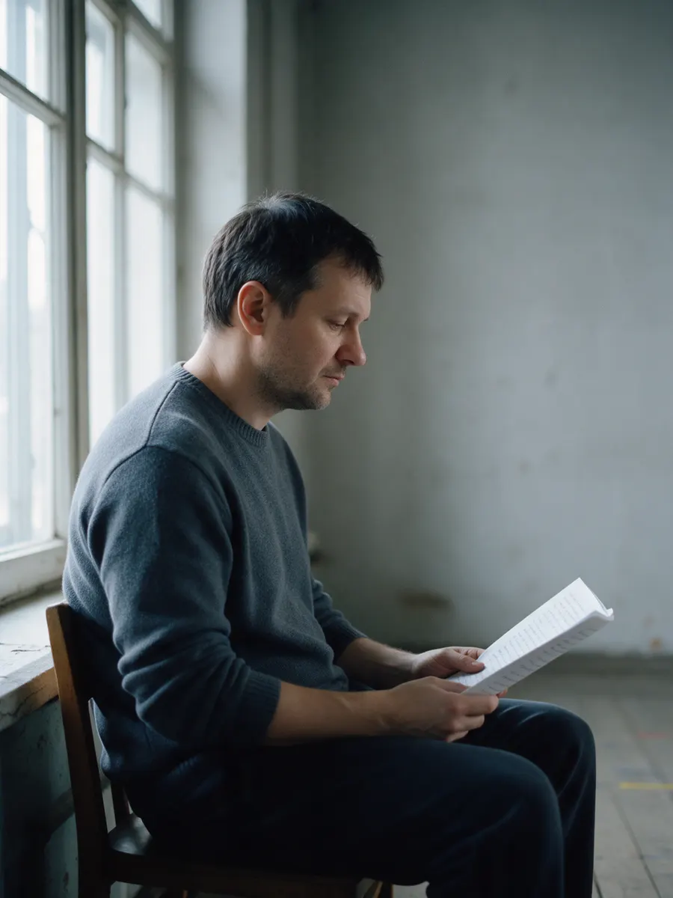
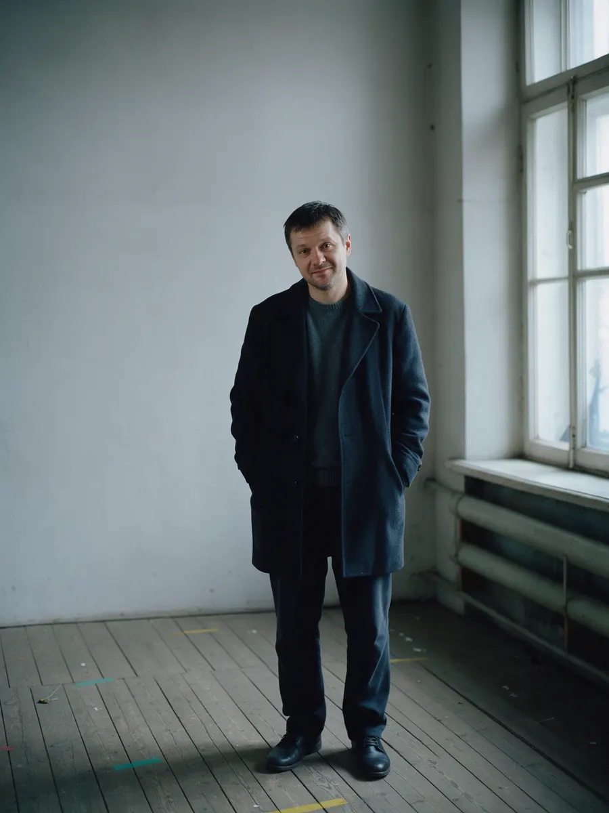
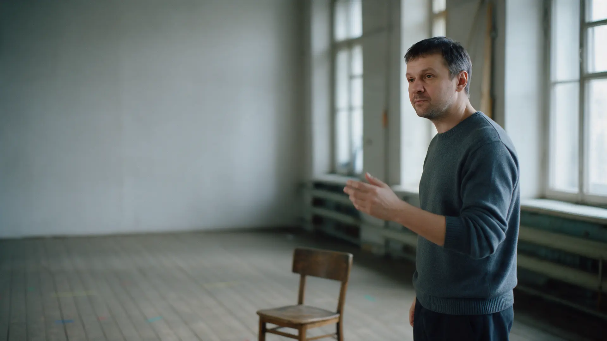
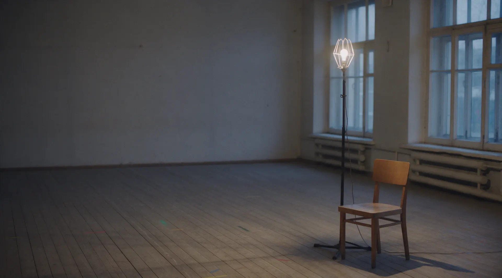

Имя Фамилия
Актёр театра «Название театра», город
Играю в репертуаре театра, пробуюсь в кино и сериалы. Открыт к приглашениям на пробы и в антрепризу.
Роль начинается не с костюма, а с карандаша: где пауза, на каком слове мысль.
Треплев. Нужны новые формы. Новые формы нужны, а если их нет, то лучше ничего не нужно.
над «новые»Ударение здесь, не на «формы»
после «нужны»Пауза. Ждёт, что мать ответит
«ничего»Тише. Это не лозунг, а отчаяние
(Так роль выглядит до первой репетиции. Дальше – зал, партнёры и режиссёр.)
Роли
(Сначала то, что идёт сейчас. Роль, спектакль, режиссёр, год премьеры.)
- Рольв спектакле «Название», реж. Фамилиягод
- Рольв спектакле «Название», реж. Фамилиягод
- Рольв спектакле «Название», реж. Фамилиягод
Кино и сериалы
- Рольв фильме «Название», реж. Фамилиягод



Нужен другой ракурс или образ – пришлю.
НаписатьШоурил
(Сцены из спектаклей и самопробы.)

Для кастинга
(Коротко о том, что обычно спрашивают до проб.)
- Игровой возраст
- от – до
- Рост
- см
- Образование
- вуз, мастерская, год
- Навыки
- вокал, сценический бой, верховая езда
- Языки
- языки и уровень
- Город
- город, готов к выездам

Пригласить на пробы
Напишите, что за проект и когда пробы. Если нужно, запишу самопробы по вашему тексту.
Пригласить на пробы- Телеграм
- @логин
- Телефон
- +7 000 000-00-00
- Почта
- почта